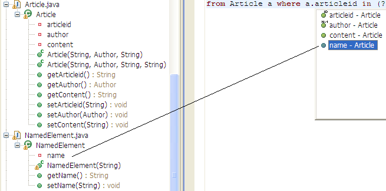
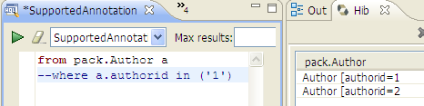
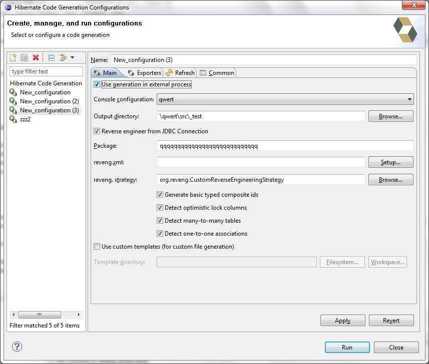
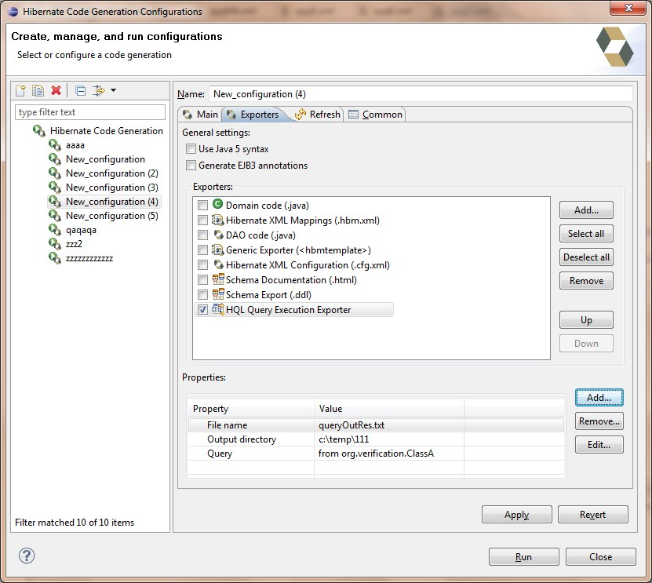
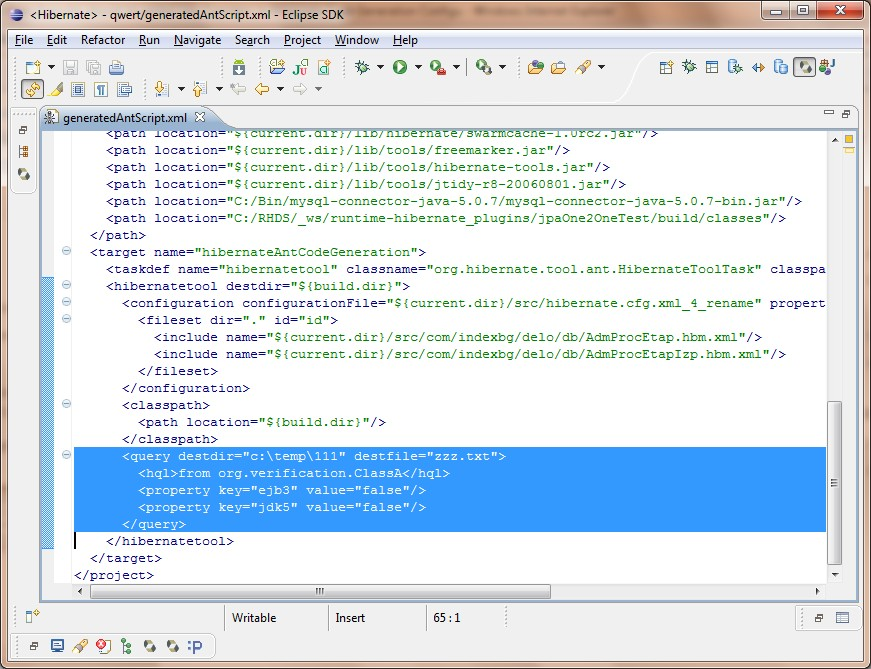

Dali Integration
Console Configuration now uses schema and catalog specified for JPA project as if they were in hibernate.properties file. User can set the schema/catalog name at project creation wizard or at project properties page. Note schema and catalog in hibernate.properties file will overwrite the properties specified for the project.

HQL Editor
HQL Editor in addition to the entity's class properties now show parent class properties.

Single-line comments now supported in HQL editor. As HQL language doesn't support comments itself they are just removed from the query before query execution.

Hibernate Code Generation Configurations
Possibility to run code generation in external process.

Possibility to execute Query Exporter from Hibernate Tools Core

Query Exporter in generated Ant code
